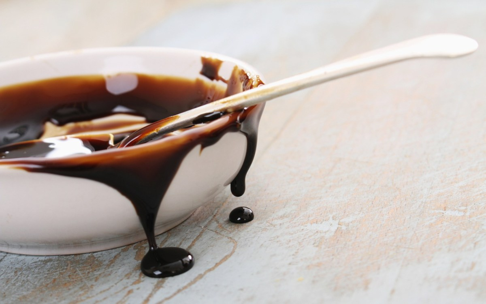

Just a little on molasses
Molasses is a sweetener that is claimed to be much healthier than sugar, which is formed as a byproduct of the sugar making process.When making molasses, first, sugar cane or sugar beets are crushed and the juice is extracted. The juice is then boiled down to form sugar crystals, which are removed from the liquid. Molasses is the thick , brown syrup left after the sugar has been removed from the juice.This process is repeated several times, and each time a different type os molasses is produced. There are several varieties of this syrup, which vary in color, consistency, flavor and sugar content, which are: Light molasses is the syrup made from the first boiling. It is the lightest in color and sweetest in taste. It's most commonly used in baking. Dark molasses is the type made from the second boiling. It's thicker, darker and less sweet. It can also be used in baking, but produces a more distinct color and favor. Blackstrap is the syrup produced after the third boiling. It's the thickest and darkest in color, and also tends to have a bitter taste. This is the most cocentrated form and contains the most vitamins and minerals,its said to have the most health benefits. Un-sulfured and sulfured molasses labeled as "sulfured" has sulfur dioxide added to it. Sulfur dioxide acts as a preservative and prevents it from spoiling.
Interesting fact: Molasses can also be made from sorghum, pomegranates and dates.
Benefits
Bone health This syrup contains a decent amount of calcium, which plays an important role in bone health and preventing osteoporosis(a condition is which bones become weak and brittle. New bone creation doesn't keep up with old bone removal). It is aksi a good source of copper, iron and selenium, all of which maintain healthy bones. It also removes toxins from the colon and cell membrane function, maintains healthy teeth and protects the body against bone diseases common during menopause.
Heart health Molasses is a good source of potassium, which promotes normal blood pressure and helps maintain heart health. Although this has yet to be studied in humans, rat studies have shown that supplementing with molasses can help increase good cholesterol.
Blood sugar Molasses may also help stablize blood sugar levels in healthy adults. One study found that eating it along with carb-containing foods resulted in lower blood sugar and insulin levels than when the foods were eaten alone.
Antioxidants According to research, blackstrap molasses contains even more antiodiants than honey, as well as other natural sweeteners like maple syrup. Studies have shown that the antioxidants in it can help to protect cells from the oxidative stress associated with cancer and other diseases.
Menstruation Molasses is a good source of iron and is very effective for menstrating women who are at a mejor risk of iron defiency due to blood loss. With no fat, and very few caloriesm it is a better alternative for contributing iron content in the body as compared to other fatty sources like red meat
